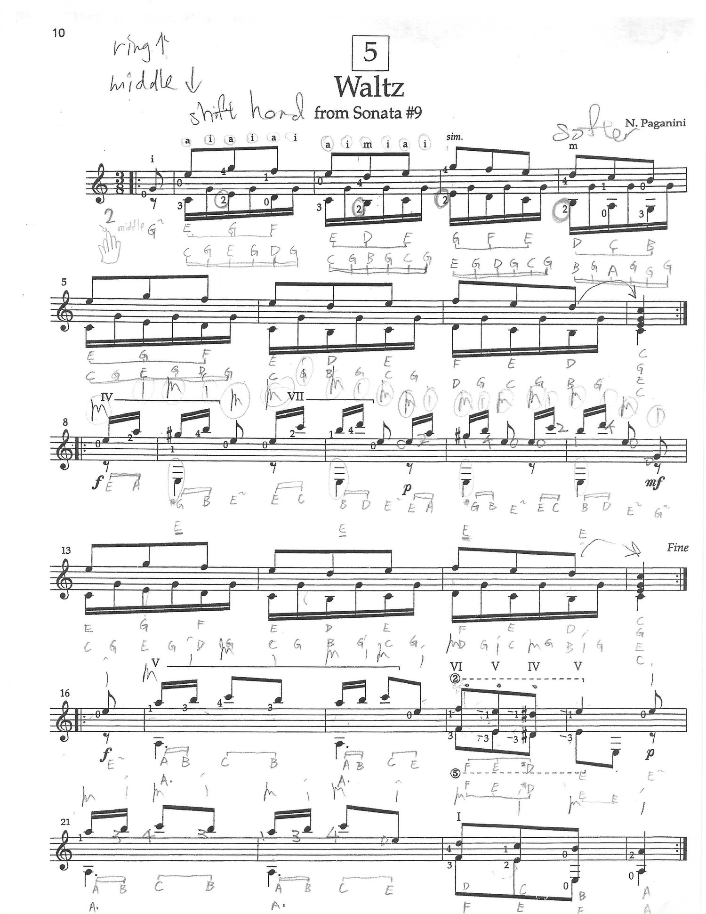
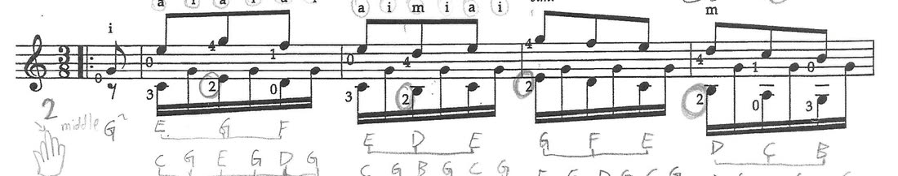
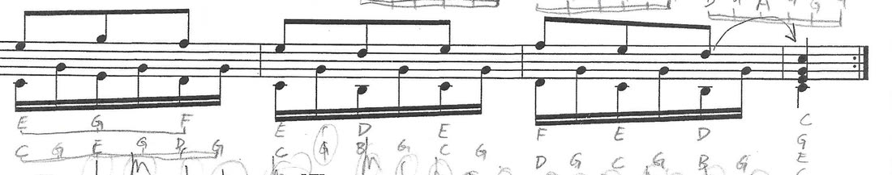
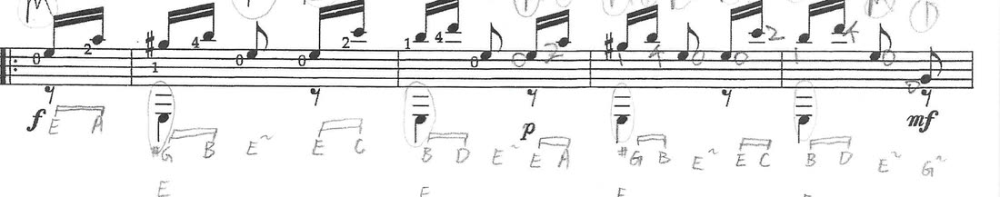
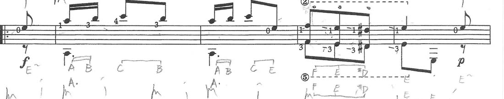
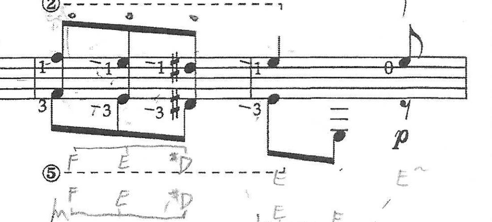
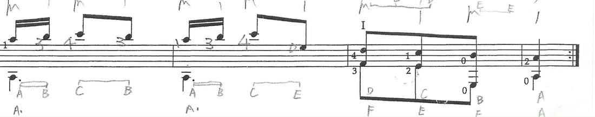

← All guitar lessons
🎸 Waltz, bar by bar
Everything Teacher Bowen said, pinned to the exact bar he said it about
Recorded Sun 25 Oct 2026
👨🏫 Teacher Bowen
14 minutes · one piece
🎼 The piece
No. 5 · Waltz from Sonata #9 · N. Paganini · 3/8 · page 10 of the folder
The whole lesson is this one page. Six lines of music, bars 1 to 23, and Teacher Bowen
worked through them in order — first the right hand, then the left hand, then the position
shifts near the end.
How we know which piece it is. The recording never says the name, but the page gives it
away: Teacher Bowen talks about a Roman numeral telling you it's the sixth position and
a number in a circle telling you which string — and this is the only page in the folder
with VI V IV V and the circled ② and ⑤ printed over the same two bars. He
also ends with "practise all six of these lines", and this page has exactly six lines.
🖍️ The page, marked up
Tap any highlighted stretch of music to jump to what Teacher Bowen said about it.
The numbers match the notes underneath.

1
2
3
4
5
6
7
The pencil on the page is Jason's own, written during the lesson — the
ring ↑ / middle ↓ at the top, the note names under the staves, and the circles
Teacher Bowen asked for.
🗣️ What Teacher Bowen said
1
Bars 1–4 · the right-hand rule
📅 25 Oct 2026 · 0:21 and again at 2:58“Every time you're playing the two notes together — if it's on the
first string, you're going to use ring. If it's on the second, you're
going to use the middle.”
One rule for the whole opening: a (ring) for anything on the first string,
m (middle) for anything on the second. That is exactly what Jason wrote at the top of the
page — ring ↑, middle ↓ — and the printed a i a i a i over bar 1 is the pattern
it produces.

Bars 1–4. The circled a and i above the notes are the right-hand fingers.
2
Bars 1–7 · the open G has to be quiet
📅 25 Oct 2026 · 3:28“This time I want you to play all the open G quietly. All of
them. Your index finger is going to be very quiet — but not the other notes. Only your
index finger playing that open G.”
The open G is the note that keeps coming back underneath the tune — it is the
i finger every time. It is meant to sit under the melody, not next to it. Teacher
Bowen made Jason play the line four times over; each time it crept back up and he stopped him
and asked for it again.
Then a check: “just touch, so you're relaxing here — is your hand hurting?”
Quiet comes from a relaxed hand, not from a careful one.

Bars 5–7 — the same pattern carrying on.
3
Bar 8 on · a new pattern — middle first
📅 25 Oct 2026 · 4:35 and 5:32“You're going to start with your middle finger, right?
m, i, m, i, m. … Middle first — you're doing index first.”
At bar 8 the right hand changes. Each group is five notes: m i m i m, and it
starts on m. Jason kept starting on i out of habit from the first line — Teacher
Bowen stopped him on it three separate times.
4
Bar 8 on · those basses are E, not A
📅 25 Oct 2026 · 6:10 — and he asked for it in writing“Just make a note for yourself on the paper. One, circle the
bass notes — those are E's, not A's. And two, circle the m, i, m, i — just to
remind yourself.”
This is the one piece of written homework in the whole lesson, and it is the
correction he came back to most: Jason was reading the low notes a string too low. They are
E. You can see the circles he drew round them on the page above, with E pencilled
underneath.

Bars 8–12. The circled bass notes, and E written under each one.
5
Bars 16–18 · two fast, two not
📅 25 Oct 2026 · 9:14“For those four notes, we have two sixteenths — faster. And
then the last two eighths are not faster. … Last two notes a little bit slower.”
A rhythm trap, not a notes trap. The group looks even on the page but it isn't:
the first two are twice as quick as the last two. The easy mistake is to let the whole
group run at one speed.

Bars 16–20. The position marks VI V IV V are the ones in note 6.
6
Bars 19–20 · the shape that slides
📅 25 Oct 2026 · 9:42 → 11:10 — the longest stretch of the lesson“You have a Roman numeral telling you it's the sixth
position. … Your index finger is going to be at the sixth fret.”
“You see the number in a circle? It's trying to tell you
which string it is. … Second. … And the other note is on the fifth.”
“So it's F and F. And then you're just going to move this
whole thing down a fret — and then down another fret — and then go back up
a fret.”
This is the hardest bar on the page and it is really one shape moved three times.
Hold the two notes on the ② and ⑤ strings, index at the 6th fret, and walk
it: F → E → D♯ → E. That is exactly what the printed VI · V · IV · V above the
bars means, and it matches the note names Jason pencilled in underneath.
Two asides while they drilled it: “use your ring” for the lower note, and
— when the shape wasn't pressed cleanly — “that sounds a little crunchy… that sounds
better.”

Bars 19–20 up close: ② and ⑤ are the strings, VI V IV V the
positions, and F · E · D♯ · E the notes.
7
Bars 21–23 · read it, don't guess it
📅 25 Oct 2026 · 11:38 → 13:00“Now it's different after this. Figure out the note. These
notes you should know very easily. … F is not sharp in this case.”
“Look at the book — it wants you to use 3–4 for your
fingering. That's 2–3.”
Two separate habits caught in a row. First, the F here is natural, not the
F♯ Jason had been playing a moment earlier. Second, the fingering printed in the book is
3–4 and he was using 2–3 — the book's fingering is there so the next shape is reachable.
Then the ending: “basically the last line, plus that last note from the line
above”, and on the repeat, “the second time is E, right?” — the second-time bar is
different from the first.

Bars 21–23, with the two endings at the finish.
🎧 The short clip
A second recording from the same evening · 1 min 49 · the piece is never named
Four quick corrections, all about time and the thumb:
“Go from the beginning — focus on your fingers, not the
thumb.”
“Remember we're keeping the notes held a little bit longer
— so it's less detached, less short.”
“That bass is too early. … In that bass you're playing a beat
too early.”
“Good, that's perfect. One more time. … Now let's put everything
together — play through the four lines one more time from the beginning.”
Which piece is this one? The clip doesn't say, and the markings alone can't
settle it. Greensleeves is the best guess — it is four lines long, it has a thumb bass on
every bar, and it is the page with Hold circled on it twice, which is the same note as
“keep the notes held longer”. Worth checking with Teacher Bowen rather than assuming.
📂 The rest of the folder
Six pieces, numbered in the book. The one from this lesson is marked.
1 · Nonesuch
Playford Collection, England, 17th century · 2/4 · ♩ = 60 · “Aeolian mode”
2 · Greensleeves
Anonymous · 3/4 · ♩ = 50 · “thumb on the nail”, two Holds circled
3 · Packington's Pound
Anonymous · 6/8 · ♩. = 115 · “write down counting”
4 · Ghiribizzo
N. Paganini · 6/8 · “don't force it”, loud at bar 10, soft after
5 · Waltz, from Sonata #9
N. Paganini · 3/8 · this lesson
6 · Andantino
F. Carulli · 2/4 · p i m a patterns
✅ What to practise
- Circle the bass notes in bars 8–12 and write E under them — he asked for this in writing.
- Circle the m i m i above bar 8 so you start that line on the middle finger.
- Bars 1–7: ring on the first string, middle on the second, and the open G stays quiet.
- Bars 19–20: one shape on ② and ⑤ — F → E → D♯ → E, index starting at the 6th fret.
- Bar 21: the F is natural, and the fingering is 3–4, not 2–3.
- Then all six lines, start to finish.